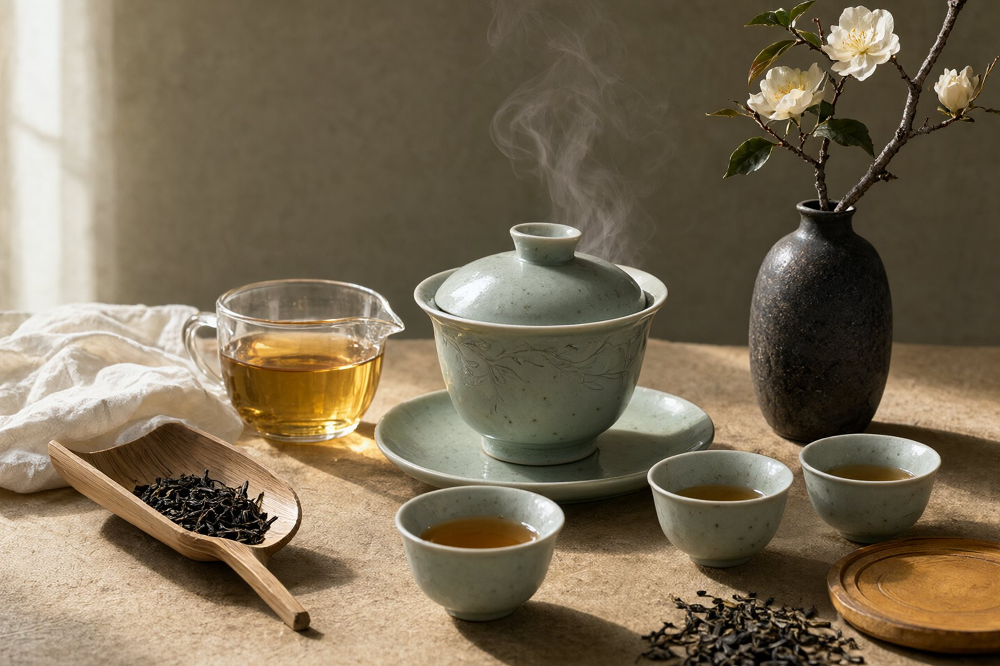
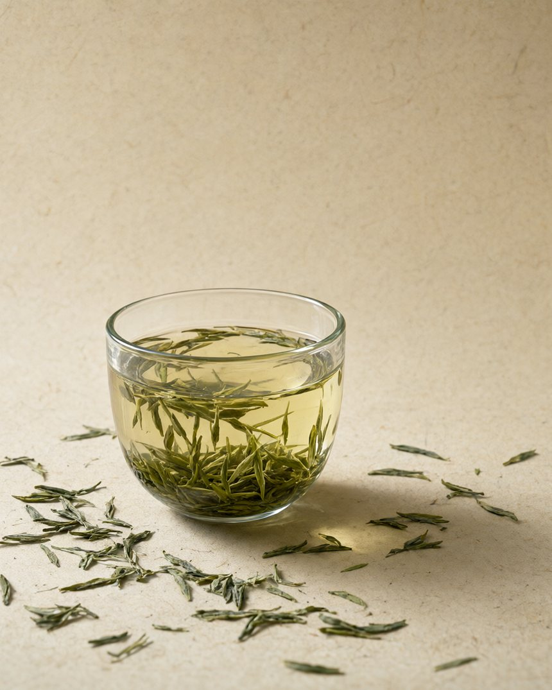
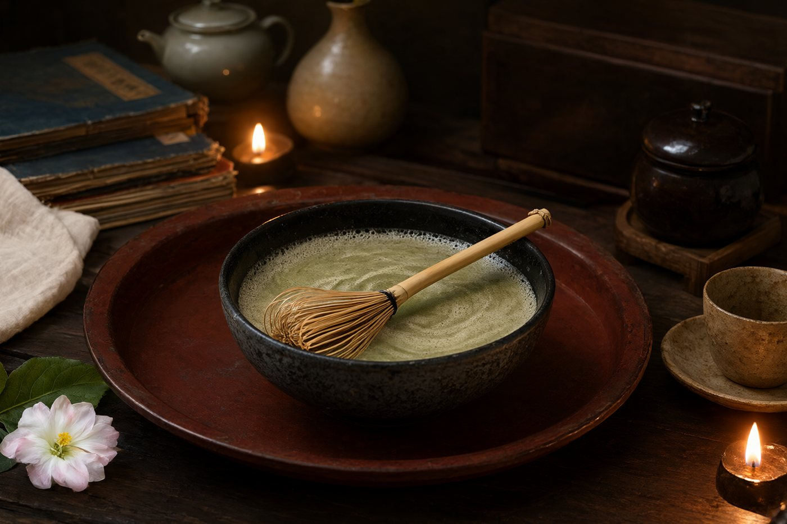

壹 THE SEVEN FAMILIES
一叶七变同一片鲜叶，因发酵程度不同，走向七种性格
拖动发酵光谱，看茶多酚如何被时间改写。从左到右，颜色由绿转红，滋味由鲜爽转向醇厚。

壹绿茶
性寒GREEN TEA
贰 THE COLLECTION
名茶图谱三十三款茶，逐一点开看产地、风味、辨伪与冲泡
33 款茶 · 点击卡片查看详解
叁 THE BREWING LAB
冲泡实验室水温、投茶、出汤，三件事决定一杯茶
选一款茶，调好参数，按下计时。每泡出汤后自动进入下一泡的节奏。
85°C · 60 秒 · 可冲 3 泡
水烧开后先温杯，再注水。绿茶不建议用刚沸的水。
- 还没有出汤记录
温杯
用热水烫过盖碗与品杯，既清洁，也避免茶汤遇冷降温过快。
注水
沿碗壁缓注，避免直冲茶叶。绿茶可先注水后投茶，看叶片舒展。
出汤
到时即出，不留底。每泡递增 5–15 秒，保持滋味平稳下降。
肆 BREW CHEAT SHEET
冲泡速查表一张表，泡遍三十三款茶
记不住参数时翻这里。按茶类筛选、点表头排序，点茶名直接看详解。
| 茶名 | 茶类 | 水温 | 茶水比 | 首泡 | 耐泡 | 茶器 |
|---|
四种注水方式
水温为什么重要
伍 HOW TO JUDGE
辨茶五步不靠玄学，靠可观察的细节
看干茶、闻香气、观汤色、品滋味、看叶底。五步走完，一泡茶的工艺与仓储基本无所遁形。
常见误区
三组容易认错的茶
点击卡片翻面，看关键区别。
陆 FIND YOUR CUP
测一测
你的茶缘
四个问题，从香气、体质、时段与口感出发，找到当下最适合你的那一类茶。
第 1 / 4 题
你的茶缘
乌龙茶
柒 WHERE TEA GROWS
茶之源北纬 18° 到 37°，四条茶区带
茶区不只是地理概念，它决定了品种、采摘期与滋味骨架。点击纬度带上的茶区，查看它的风土与名茶。
* 纬度区间为示意，实际茶区受海拔、坡向与季风影响。
代表名茶
海拔、温差与漫射光，让叶片在缓慢生长中积累更多氨基酸与芳香物质。
捌 A THOUSAND YEARS
茶事千年从药用到日常，从煎煮到冲泡
中国人的饮茶方式，经历过三次大转向：唐代煎茶、宋代点茶、明代瀹饮。每一次改变，都重新定义了茶的味道。

茶席上的三条老规矩
- 酒满敬人，茶满欺人。茶倒七分，留三分人情，也免得烫手。
- 叩指谢茶。长辈斟茶，以食指与中指轻叩桌面，代跪谢之礼。
- 先客后主，及时续水。一泡茶淡了就该换，不让客人喝「水味」。
认识几件茶器
玖 TASTING VOCABULARY
茶学术语词典把「玄乎」的词，翻译成喝得到的感受
回甘、生津、喉韵、岩韵……读懂这些词，品鉴笔记才写得明白。按类别筛选或直接搜索。
拾 COMMON MYTHS